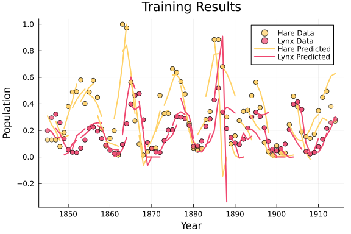
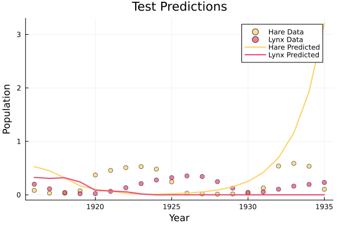

Training with SGDBackend
This tutorial demonstrates how to use the SGDBackend for training a hybrid autoregressive model modelling the classic hare-lynx predator-prey system, where the predation interaction is learned via neural networks while maintaining mechanistic constraints for birth and death processes.
The train function provided by HybridDynamicModels is an experimental feature, exposed for demonstration purposes. Users are encouraged to implement their own train function to gain more control over the training process; see Overloading the train function.
Importing necessary packages
In order to use the SGDBackend, we'll need to manually load Lux, Optimisers, and ComponentArrays. We additionally load Zygote for automatic differentiation, ParameterSchedulers for learning rate scheduling, and Plots, DataFrames, DelimitedFiles, and HTTP for data handling and visualization.
using Lux, Optimisers, ComponentArrays
using Zygote
using HybridDynamicModels
using ParameterSchedulers
using Random
using Plots
using DataFrames, DelimitedFiles, HTTP
const luxtype = Lux.f64f64 (generic function with 1 method)Data loading
Load the Lynx-Hare population dataset:
url = "http://people.whitman.edu/~hundledr/courses/M250F03/LynxHare.txt"
data = readdlm(IOBuffer(HTTP.get(url).body), ' ') |> luxtype
df_data = DataFrame(Year = data[:, 1], Hare = data[:, 2], Lynx = data[:, 3])
# Visualize observed data (hare and lynx)
plt_data = plot(df_data.Year, df_data.Hare, label = "Hare", xlabel = "Year",
ylabel = "Population", title = "Observed Hare-Lynx Data")
plot!(plt_data, df_data.Year, df_data.Lynx, label = "Lynx")
display(plt_data)Data preparation
Prepare training and test datasets:
tsteps = Vector(df_data.Year) |> luxtype
# Extract hare and lynx data
hare_lynx_data = Array(df_data[:, Not(:Year)])' |> luxtype
hare_lynx_data ./= maximum(hare_lynx_data)
# Data array: [hare, lynx]
data_array = hare_lynx_data |> luxtype
forecast_length = 20
test_idx = size(data_array, 2) - forecast_length + 1:size(data_array, 2)
# Create training dataloader
dataloader_train = SegmentedTimeSeries(
(data_array[:, Not(test_idx)], tsteps[Not(test_idx)]);
segment_length = 4, shift = 2, batchsize = 20)SegmentedTimeSeries
Time series length: 71
Segment length: 4
Shift: 2 (50.0% overlap)
Batch size: 20
Total segments: 34
Total batches: 1Model definition
Define a hare-lynx predator-prey model where the predation interaction is learned via neural networks, while birth and death processes follow mechanistic rules:
# Neural network for hare-lynx predation interactions
hlsize = 2^4
neural_interactions = Chain(Dense(2, hlsize, relu),
Dense(hlsize, hlsize, relu),
Dense(hlsize, 1)) # Output: predation rate
# Learnable ecological parameters
mechanistic_params = ParameterLayer(init_value = (
hare_birth = [0.8],
hare_death = [0.1],
lynx_death = [0.2] ),
constraint = NamedTupleConstraint((hare_birth = BoxConstraint([0.0], [2.0]),
hare_death = BoxConstraint([0.001], [1.0]),
lynx_death = BoxConstraint([0.001], [1.0]))
))
# Hybrid ecosystem dynamics
function ecosystem_step(layers, u, ps, t)
hare, lynx = max.(u, 0.) # Unpack state variables
params = layers.mechanistic_params(ps.mechanistic_params)
# Neural network: predation rate
predation_input = [hare, lynx]
predation_rate = layers.neural_interactions(predation_input, ps.neural_interactions)[1]
# Mechanistic hare dynamics
hare_birth = params.hare_birth[1] * hare
hare_predation = -predation_rate * hare * lynx
hare_natural_death = -params.hare_death[1] * hare
# Mechanistic lynx dynamics
lynx_predation_gain = predation_rate * hare * lynx # Lynx gain from predation
lynx_death = -params.lynx_death[1] * lynx
# Return derivatives
return [
hare_birth + hare_predation + hare_natural_death, # Hare
lynx_predation_gain + lynx_death # Lynx
]
end
# Create autoregressive model
model = ARModel(
(;neural_interactions, mechanistic_params),
ecosystem_step;
dt = tsteps[2] - tsteps[1],
);Training configuration
Configure training with learning rate scheduling and callbacks:
# Learning rate schedule: exponential decay
lr_schedule = Step(1e-2, 0.9, 200)
# Callback for monitoring and learning rate adjustment
function callback(loss, epoch, ts)
if epoch % 20 == 0
current_lr = lr_schedule(epoch)
@info "Epoch $epoch: Loss = $loss, LR = $current_lr"
Optimisers.adjust!(ts.optimizer_state, current_lr)
end
end
# Training backend configuration
backend = SGDBackend(
AdamW(eta = 1e-2, lambda = 1e-4), # Optimizer with weight decay
2000, # Number of epochs
AutoZygote(), # Automatic differentiation
MSELoss(), # Loss function
callback # Training callback
)HybridDynamicModelsLuxExt.SGDBackend(AdamW(eta=0.01, beta=(0.9, 0.999), lam
bda=0.0001, epsilon=1.0e-8, couple=true), 2000, AutoZygote(), GenericLossFu
nction{typeof(Lux.LossFunctionImpl.l2_distance_loss), typeof(mean)}(Lux.Los
sFunctionImpl.l2_distance_loss, Statistics.mean), Main.var"##WeaveSandBox#2
37".callback)Training
Train the model with initial condition inference:
@info "Starting training..."
result = train(backend, model, dataloader_train, InferICs(true));Starting training...
Epoch 20: Loss = 0.040252971071892615, LR = 0.01
Epoch 40: Loss = 0.027944369138810304, LR = 0.01
Epoch 60: Loss = 0.02188546861908758, LR = 0.01
Epoch 80: Loss = 0.01815903320044569, LR = 0.01
Epoch 100: Loss = 0.015714221990661633, LR = 0.01
Epoch 120: Loss = 0.01417935815247432, LR = 0.01
Epoch 140: Loss = 0.013153408238147025, LR = 0.01
Epoch 160: Loss = 0.01252025922969401, LR = 0.01
Epoch 180: Loss = 0.012051756791683386, LR = 0.01
Epoch 200: Loss = 0.01168165587812461, LR = 0.01
Epoch 220: Loss = 0.011393383236772716, LR = 0.009000000000000001
Epoch 240: Loss = 0.011199264895388006, LR = 0.009000000000000001
Epoch 260: Loss = 0.011012058120244913, LR = 0.009000000000000001
Epoch 280: Loss = 0.010864521516272655, LR = 0.009000000000000001
Epoch 300: Loss = 0.010768822022910966, LR = 0.009000000000000001
Epoch 320: Loss = 0.010671630691497874, LR = 0.009000000000000001
Epoch 340: Loss = 0.010601541583718161, LR = 0.009000000000000001
Epoch 360: Loss = 0.01060268764035057, LR = 0.009000000000000001
Epoch 380: Loss = 0.01048758984204962, LR = 0.009000000000000001
Epoch 400: Loss = 0.010471011043071793, LR = 0.009000000000000001
Epoch 420: Loss = 0.010420491847983328, LR = 0.008100000000000001
Epoch 440: Loss = 0.010395547396649888, LR = 0.008100000000000001
Epoch 460: Loss = 0.010385526122873072, LR = 0.008100000000000001
Epoch 480: Loss = 0.010357643441888591, LR = 0.008100000000000001
Epoch 500: Loss = 0.010349074649494406, LR = 0.008100000000000001
Epoch 520: Loss = 0.010333182564082624, LR = 0.008100000000000001
Epoch 540: Loss = 0.010324008757870809, LR = 0.008100000000000001
Epoch 560: Loss = 0.010330311433431098, LR = 0.008100000000000001
Epoch 580: Loss = 0.010272117770733271, LR = 0.008100000000000001
Epoch 600: Loss = 0.010228899679970328, LR = 0.008100000000000001
Epoch 620: Loss = 0.010211928515630169, LR = 0.007290000000000001
Epoch 640: Loss = 0.010204335096843013, LR = 0.007290000000000001
Epoch 660: Loss = 0.010178267336789065, LR = 0.007290000000000001
Epoch 680: Loss = 0.010156331587848764, LR = 0.007290000000000001
Epoch 700: Loss = 0.010157719680514345, LR = 0.007290000000000001
Epoch 720: Loss = 0.010106704559889988, LR = 0.007290000000000001
Epoch 740: Loss = 0.01008569867487808, LR = 0.007290000000000001
Epoch 760: Loss = 0.010060692513736173, LR = 0.007290000000000001
Epoch 780: Loss = 0.01007118837678057, LR = 0.007290000000000001
Epoch 800: Loss = 0.010021368152377317, LR = 0.007290000000000001
Epoch 820: Loss = 0.010021808381035918, LR = 0.006561
Epoch 840: Loss = 0.009977062658889745, LR = 0.006561
Epoch 860: Loss = 0.009940601268169674, LR = 0.006561
Epoch 880: Loss = 0.009931447049415476, LR = 0.006561
Epoch 900: Loss = 0.009936760100248083, LR = 0.006561
Epoch 920: Loss = 0.009896055492771616, LR = 0.006561
Epoch 940: Loss = 0.009876301743727492, LR = 0.006561
Epoch 960: Loss = 0.009832364861550319, LR = 0.006561
Epoch 980: Loss = 0.009857973793659259, LR = 0.006561
Epoch 1000: Loss = 0.009816760533042862, LR = 0.006561
Epoch 1020: Loss = 0.00999844613431186, LR = 0.005904900000000001
Epoch 1040: Loss = 0.00977909782639767, LR = 0.005904900000000001
Epoch 1060: Loss = 0.009726712801251036, LR = 0.005904900000000001
Epoch 1080: Loss = 0.009732984758017914, LR = 0.005904900000000001
Epoch 1100: Loss = 0.00969383210367607, LR = 0.005904900000000001
Epoch 1120: Loss = 0.009715400014639154, LR = 0.005904900000000001
Epoch 1140: Loss = 0.00966576312110675, LR = 0.005904900000000001
Epoch 1160: Loss = 0.009650539115191134, LR = 0.005904900000000001
Epoch 1180: Loss = 0.009651073469572636, LR = 0.005904900000000001
Epoch 1200: Loss = 0.00965068536895292, LR = 0.005904900000000001
Epoch 1220: Loss = 0.009596986754020178, LR = 0.00531441
Epoch 1240: Loss = 0.009638174249314398, LR = 0.00531441
Epoch 1260: Loss = 0.009596772997050645, LR = 0.00531441
Epoch 1280: Loss = 0.009661502564814014, LR = 0.00531441
Epoch 1300: Loss = 0.00956146353809057, LR = 0.00531441
Epoch 1320: Loss = 0.009547905281911398, LR = 0.00531441
Epoch 1340: Loss = 0.00953209157133259, LR = 0.00531441
Epoch 1360: Loss = 0.009538168532440142, LR = 0.00531441
Epoch 1380: Loss = 0.009546664667616871, LR = 0.00531441
Epoch 1400: Loss = 0.009531206404064902, LR = 0.00531441
Epoch 1420: Loss = 0.009581226366130744, LR = 0.004782969000000001
Epoch 1440: Loss = 0.009521534904915488, LR = 0.004782969000000001
Epoch 1460: Loss = 0.009498902283003874, LR = 0.004782969000000001
Epoch 1480: Loss = 0.009498473567182964, LR = 0.004782969000000001
Epoch 1500: Loss = 0.009498398654025348, LR = 0.004782969000000001
Epoch 1520: Loss = 0.009470924351119507, LR = 0.004782969000000001
Epoch 1540: Loss = 0.009479680261240667, LR = 0.004782969000000001
Epoch 1560: Loss = 0.00954089843936891, LR = 0.004782969000000001
Epoch 1580: Loss = 0.009520889699741996, LR = 0.004782969000000001
Epoch 1600: Loss = 0.009373332127769595, LR = 0.004782969000000001
Epoch 1620: Loss = 0.009368844627600514, LR = 0.004304672100000001
Epoch 1640: Loss = 0.009332225473295857, LR = 0.004304672100000001
Epoch 1660: Loss = 0.009320248057933498, LR = 0.004304672100000001
Epoch 1680: Loss = 0.00934501006980829, LR = 0.004304672100000001
Epoch 1700: Loss = 0.009317838191354426, LR = 0.004304672100000001
Epoch 1720: Loss = 0.009296563544799094, LR = 0.004304672100000001
Epoch 1740: Loss = 0.009281561290217958, LR = 0.004304672100000001
Epoch 1760: Loss = 0.009266404424988085, LR = 0.004304672100000001
Epoch 1780: Loss = 0.009253001583929912, LR = 0.004304672100000001
Epoch 1800: Loss = 0.009280979469163236, LR = 0.004304672100000001
Epoch 1820: Loss = 0.009270972185678083, LR = 0.003874204890000001
Epoch 1840: Loss = 0.009241624868160703, LR = 0.003874204890000001
Epoch 1860: Loss = 0.009230683233026744, LR = 0.003874204890000001
Epoch 1880: Loss = 0.009228743659942399, LR = 0.003874204890000001
Epoch 1900: Loss = 0.009253792858113202, LR = 0.003874204890000001
Epoch 1920: Loss = 0.009215853043055286, LR = 0.003874204890000001
Epoch 1940: Loss = 0.009220356005606814, LR = 0.003874204890000001
Epoch 1960: Loss = 0.009256408315022105, LR = 0.003874204890000001
Epoch 1980: Loss = 0.009220834854574334, LR = 0.003874204890000001
Epoch 2000: Loss = 0.009190183857737235, LR = 0.003874204890000001Results visualization
Visualize training fit and test predictions for the hare-lynx ecosystem:
# Colors: blue for hare, red for lynx
hare_color = "#ffd166"
lynx_color = "#ef476f"
# Function to plot training results
function plot_training_results(dataloader, result, model)
plt = plot(title = "Training Results", xlabel = "Year",
ylabel = "Population", legend = :topright)
dataloader_tokenized = tokenize(dataloader)
for tok in tokens(dataloader_tokenized)
segment_data, segment_tsteps = dataloader_tokenized[tok]
ics = result.ics[tok].u0
pred, _ = model(
(; u0 = ics, saveat = segment_tsteps,
tspan = (segment_tsteps[1], segment_tsteps[end])),
result.ps, result.st)
# Plot observed data
scatter!(plt, segment_tsteps, segment_data[1, :],
label = (tok == 1 ? "Hare Data" : ""),
color = hare_color, markersize = 4, alpha = 0.7)
scatter!(plt, segment_tsteps, segment_data[2, :],
label = (tok == 1 ? "Lynx Data" : ""),
color = lynx_color, markersize = 4, alpha = 0.7)
# Plot predictions
plot!(plt, segment_tsteps, pred[1, :],
label = (tok == 1 ? "Hare Predicted" : ""),
color = hare_color, linewidth = 2)
plot!(plt, segment_tsteps, pred[2, :],
label = (tok == 1 ? "Lynx Predicted" : ""),
color = lynx_color, linewidth = 2)
end
return plt
end
# Plot training results
plt_train = plot_training_results(dataloader_train, result, model)
Forecast on test data:
tsteps_test = tsteps[test_idx]
data_test = data_array[:, test_idx]
u0, t0 = result.ics[end]
preds, _ = model((; u0 = u0, tspan = (t0, tsteps_test[end]), saveat = tsteps_test),
result.ps, result.st)
# Plot test predictions
plt_test = plot(title = "Test Predictions", xlabel = "Year", ylabel = "Population", legend = :topright)
scatter!(plt_test, tsteps_test, data_test[1, :], label = "Hare Data", color = hare_color, markersize = 4, alpha = 0.7)
scatter!(plt_test, tsteps_test, data_test[2, :], label = "Lynx Data", color = lynx_color, markersize = 4, alpha = 0.7)
plot!(plt_test, tsteps_test, preds[1, :], label = "Hare Predicted", color = hare_color, linewidth = 2)
plot!(plt_test, tsteps_test, preds[2, :], label = "Lynx Predicted", color = lynx_color, linewidth = 2)
Some final notes
- When training a neural network-based parametrization, it is usually best practice to use a validation loss to avoid overfitting. This can be implemented by creating a separate validation dataloader (see
create_train_val_loaders) and modifying the training loop to compute validation loss at intervals, overloading thetrainfunction. Check out the Overloading thetrainfunction tutorial for an example.